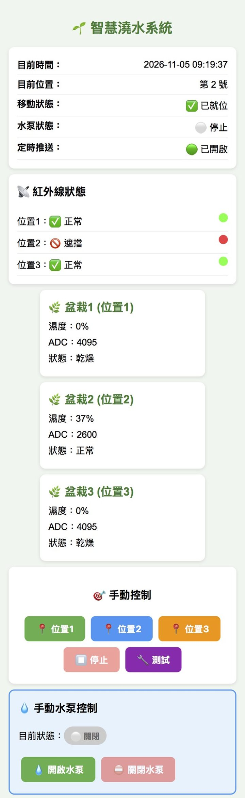
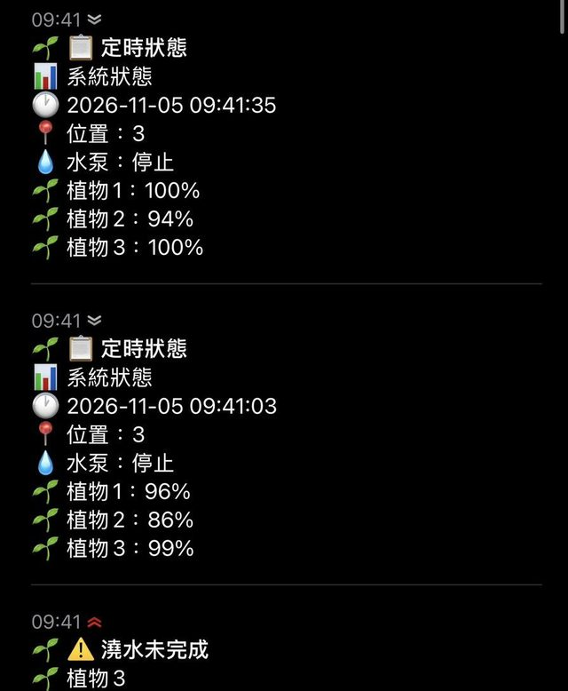
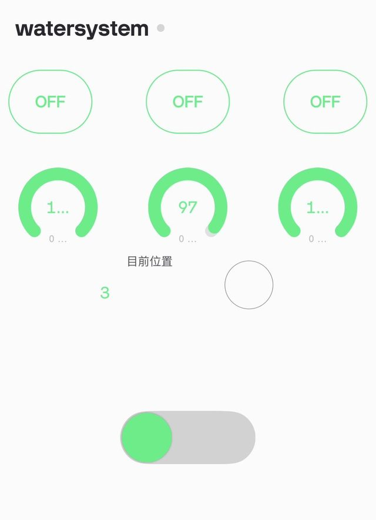

實機與操作介面
實體裝置分成上下兩層，操作則可以用網頁、ntfy 推播或 Blynk 完成。

上層：移動軌道與植物
步進馬達帶動皮帶，讓滑塊把澆水頭對準三盆植物。
下層：控制核心
ESP32、麵包板、繼電器與驅動器集中在下層。
水箱與水泵
水泵從水箱抽水，透過水管送到澆水頭。
三種操作方式

網頁儀表板
用手機或電腦打開網頁，就能看到系統狀態並手動操作。
- 即時狀態：目前時間、位置、移動狀態、水泵狀態與定時推送是否開啟。
- 紅外線狀態：位置 1～3 正常或遮擋，遮擋代表滑塊已就位。
- 盆栽資訊：每盆的濕度 %、ADC 數值與乾燥／正常狀態。
- 手動控制：移到位置 1～3、停止滑塊或測試。
- 手動水泵控制：顯示水泵目前狀態，可開啟或關閉水泵。
手機通知與儀表板

每 30 秒回報位置、水泵與三盆濕度，開始澆水或異常時立即通知，每則都有時間戳記。

用開關與儀表查看三盆濕度和目前位置，隨時遠端控制。